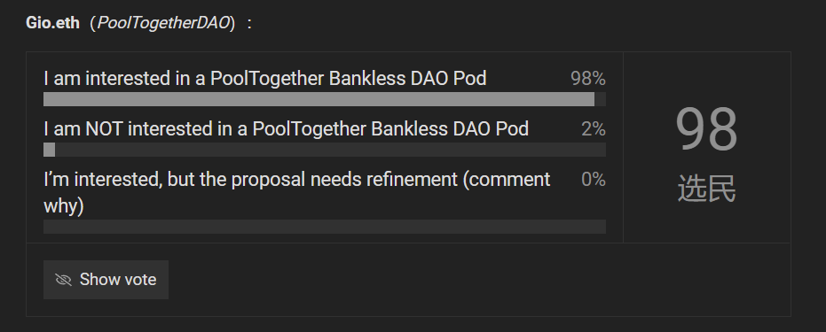

伴着元宇宙概念的大火，DAO也被越来越多的人知道。一些人认为，做为一种新形态的协作组织，未来人们很可能工作的DAO中，就像今天我们在公司上班一样。所以，一个引人好奇的问题是，在DAO当中工作是一种什么体验？这和公司上班有什么显著的不同？鉴于如今大多数的DAO都是以Bankless Dao为模板进行活动的，所以体验一下Bankless DAO，或许我们会得到一个自己的答案。
首先来介绍一下Bankless DAO，Bankless DAO源于2019年创立的媒体Bankless，他们开始的时候主要做关于加密行业动态的内容，后来又增加了别的内容。由于他们内容及时，很多预测也很在行，靠着慢慢的财富密码获得了很高的关注，成为加密社区中很有影响力的媒体。今年5 月 4 日， Bankless 宣布推出去中心化自治组织 Bankless DAO，并推出该 DAO 的治理代币 $BANK，创世总量 10 亿枚。其中的30% 将追溯性分配给之前Bankless的支持者，30% 属于项目的财库、40% 将以 3 年时间线型归属于财库，Bankless官方不持有任何$BANK。后来又通过提案，原属于项目财库的30%将分出25%由官方代管。
目前Bankless DAO中拥有写作、财务、翻译、研究、运营、市场、法律、教育、设计、商务开发、开发、视频、数据分析等十三个工会，以及多重签名小组和拨款委员会等管理小组。大多数的公会和小组都是通过成员自愿参与和投票进行管理的。只要在相应的Notion页面上写上自己的名字特长即可。
虽然任何人都可以加入Bankless DAO，但为了衡量成员的贡献值、增加社区黏性，目前Bankless DAO中为成员划分了三个等级：加入社区即是社区成员，但不能参加治理活动；购买持有35000$BANK就成为一级成员，可以参加社区治理；然后在社区中有一定贡献，被他人推举并且投票通过就可以成为二级成员，这个就比较偏荣誉性质。持有150000$BANK就成为三级成员。
通过这样的组织体系，Bankless DAO能够同时进行很多不同的项目，比如面向外界宣传的播客视频，链上的去中心化金融项目和自己的NFT项目，还有在元宇宙中建设Bankless小岛这样充满科幻感的项目。
Bankless DAO的主要人员和信息可以在他们的Discord社区、Notion页面和官网论坛中看到。但是每一个刚刚进入的人都不免陷入到混乱当中，比如他们的Discord中有上百个五花八门的频道，多到截图软件也没法全部截完的地步：
那么，在这样一个DAO中应该怎样工作呢？我实际体验之后总结了大致这样的流程如下：
第一步：在Discord中获得初步共识
首先我要有一个项目，比如说，整活一点，我要在Bankless社区中建立一个“bank”。首先就要先面对这样一些问题：社区是否真的需要一个“bank”？还有多少人会参与到这个行动当中？这个项目需要从社区中获得什么资源？这个时候我们甚至不知道要找什么人来把这个想法进行下去，也很难快速找到一个“高层”来沟通。
事实上，我们也不需要寻求“高层”支持，只需要在Discord相应的频道里不断地和人提起你的想法就好了。这里是整个DAO最基层也是最重要的地方。它有点像古希腊民主政治中的广场或是集会，任何人都能站在小板凳上发表一个演讲。如果我们“bank”的想法足够诱人，那么你就会遇到到第一批伙伴。或者你也可以到Bankless的网站论坛上去发表这个想法，那里反馈的速度比较慢，但是讨论也更充分。
（Flipper.tool NFT项目发起时的聊天）

第二步：在网站里发起提案
虽然第一步中，论坛不是必要的，但是我们要把“bank”项目进一步推进，我们就一定需要这个论坛了。只持有规定的35000$BANK 去Bankless的官网（https://forum.bankless.community/ ）登录就可以使用。这里是比广场更加正式的场所，你需要把想进行的项目公示出来，让更多人看看。在Bankless DAO，这类帖子也是有严格格式要求的。这里可以展示一份目前Bankless中关于发行一些NFT的提案，参考它，我们大概就能明白关于“bank”的提案应该怎么写了（我认为类似的提案非常重要，可称是整个Bankless的核心，所以会在文末附上Bankless DAO中给出的模板以供中文DAO的建设者们参考）：
https://forum.bankless.community/t/flipper-tool-nft-project-grant-request/2081
（Flipper.tool NFT项目要求社区资助提案的链接）
可以看到，Bankless要求每一个提案者提出的具体可行的项目规划，从项目背景到具体工作规划，人员和详细财务信息，以及最后的考核标准，一切必须可行可考和透明。在考虑bank项目的时候，由于我们和DAO的价值观有比较明显的冲突，这一块可能是一个雷点；还有预算以及财政问题，我在参考了社区财政公会的相关文件和别的提案之后，发现目前大概的报酬是根据工作时间来的，每小时工作时间一般能够得到1000$BANK（按照目前每个0.1美元的报价，约合人民币639元人民币。这也就意味着八小时工作制一天就有5112元！难怪有人说，在DAO里工作，月入上万不是梦）；以及很重要的是，需要介绍清楚参加这个项目的小伙伴们。
（目前的$BANK报价）
我们可以在帖子的评论区当中看到种种关于项目的疑问，比如关于NFT的这个项目中，有人在阅读Discord聊天记录后，质疑组织者是把外部的项目带进来套取社区资金，理由是几个组织者在DAO中活动不多，而且加入时间很短；还有一些关于财务和收入规划的质疑，比如收入分配不合理，项目执行计划和财务预策依据都没有写出来等等。为了让帖子得到认可，发起人就要在下面不厌其烦地解释。直到大多数人认可了这份提案，这也是一个完善提案和扩大共识的过程。
（针对Flipper.tool NFT项目的提问和回应）
第三步：投票
最后，做为社区决策最重要的一步，我们需要把“bank”的提案放到交由整个社区来表决，Bankless严格规定了提案通过需要的数据。我们得在七天内吸引到整个DAO百分之一的人来投票，并且得票率在66%以上才能让这个项目在Bankless中建立起来。早期很多重要项目比如季度财报和货币发行计划都是在Snapshot上进行投票的，但现在更多的项目可以直接在论坛相关提案下面设置投票，这显然更加方便了。
(Flipper.tool NFT项目的投票栏)
Bankless还要求项目的发起者需要自行在Wiki（记录在Notion文档中）添加相关描述。像我们的bank，涉及到了一些财务和可能的跨工会人员要求，那么财政公会、多重签名小组和社区运营就会找过来询问相关需要，他们也负责相应资源的匹配和项目进程的核算。
总结一下，我们可以发现Bankless DAO的整个结构虽然繁多，但真实构造并不复杂。大致上可以分为社区人力资源和财务资源两块。人力资源就是我们直接见到的种种工会，频道以及Notion当中的文档，由运营工会负责日常工作和整理（虽然也规定了每个项目要有协调人，但协调人往往是根据需要自愿担当），可以在Notion中填写自己的特长报名参加工会；财务资源由负责整体财务安排的财政工会、辅助预算和给出项目报价的拨款委员会以及控制最终资金到账的多重签名组共同组成，这里可能也是目前整个DAO中最“中心化”的部分，一些组甚至直到不久前还是创世管理团队在运行，他们维持了整个体系的激励机制正常运转。
一点感想
做为一个在Web2.0的公司中有过工作经历的个人，Bankless提供的工作体验可称舒爽。在一家公司中，个人的想法往往是不重要的，你需要看领导想要什么：你尽管提方案，领导不满意就不停地改。但实际上不同领导的水平也参差不齐，对于新事物的接受能力也往往有限，一个项目的落地需要反复跑手续，反复汇报，但还是会发生一言不合就否决的情况。而Bankless DAO中，只要你的想法合理，能找到伙伴，就大可以去实现它，这让我前所未有地感到了什么叫“创造性工作”。
然而需要强调的是，Bankeless DAO的体系并非完美无缺：
首先实际跑一遍Bankless的流程比我想象中的要累，这里的确没有一般公司中那么严格和麻烦的手续，也不会限制你的想法，麻烦的地方在于你需要寻求社区其他成员的支持，并且和不同意见的人反复解释和拉扯。各种各样的频道和文件也让人头大，有用的信息夹杂在大量与我无关的聊天和帖子中。这既阻碍了新人快速进入社区工作，也限制了社区的进一步扩大。
其次，整个社区看上去花团锦簇，内容满满，但实际接触下来，真正高度参与的核心成员不多，大多数是来看个热闹的。上万人的Discord频道每天都有上百名新人加入，然而哪怕最受关注的的提案阅读量也不到两千，真正参与投票的人只有几十人，每日在帖子下面留言互动的也多是些熟面孔。这或许也是目前DAO组织的一个普遍问题，只不过Bankless DAO显得还不那么严重而已。

（一个热门项目的阅读和投票情况）
或许我们能提出些建议来改善这一情况：比如，给那些高度参与者以更高的身份；给予那些投票的人以额外的治理激励；或是添加更多的算法程序，定向向成员提供他们兴趣中的信息……但这是否某种情况上意味着，我们放弃了DAO扁平化区中心的初衷，转而引入了新的科层制？额外激励是否会加剧成员间的两极分化？这些都是值得探讨的问题。做为一种组织形式，现在说DAO取代公司还为时过早，只能在实践中观察了。
不论怎样，正如Bankless的管理者们在Wiki里反复强调的，最重要的始终是行动。Bankless DAO也在变革。或许几个月后我们再研究它的时候，就能发现本文提及的很多结构已经改变。目前中文世界的DAO组织也如同雨后春笋一样诞生，能够看一看Bankless这样成熟组织的经验或许会有所帮助。不管我们的机制设计有多么复杂，花了多少心思，但是核心应当只有一个：找出可行的项目，然后行动。
Bankless DAO 计划和资金提案
请使用此模板
标题：[简明标题 - 保持简洁]
作者：[Discord ID]
小队：[成员的Discord ID]
创建日期：[添加创建日期]
发布日期：[添加发布日期]
概括
用几个要点或句子归纳总结即可。
背景
你为什么要提出这个提案？此提案针对的问题是什么？你为什么认为这个提案可行？
目的与Bankless价值观
这个项目是否符合组织的价值观？这个项目是怎么帮助组织实现目标的？
工作范围
这个项目需要哪些工作？你建议通过此提案实现哪些目标、功能？有没有可执行文件？
在能实现目标的前提下合理申请社区资金。如果你的后续计划有变动，你随时可以申请更多。
详情
详细解释你的项目。在准备这一节的时候，你应该已经和其他社区成员达成共识了。你提供的数字和方案越准确，你的提案就越有可能被批准。包括小队成员的详细信息，没找到人可以把空缺的职位先写上来。比如，你需要开发工会中的某个人来做什么工作。
财务影响
你需要社区提供资金的详细信息。你必须写一个详细的细目来解释资金将如何分配。没有资金明细的提案将不会获得批准。小队成员在项目中进行的一切前期后期工作都有报酬，可以把预算写进来。
只有要求社区提供资金的项目需要填写这一项。
品牌使用
如果项目将在 DAO 之外使用 Bankless DAO 品牌，请详细说明你将如何使用我们的品牌，并为项目添加“Bankless Brand”标签。
成功指标或 KPI
如何衡量项目的成功？
下一步
如果这个提议被接受，你马上会进行的活动
小队背景
你是谁？你之前的兴趣点是什么？